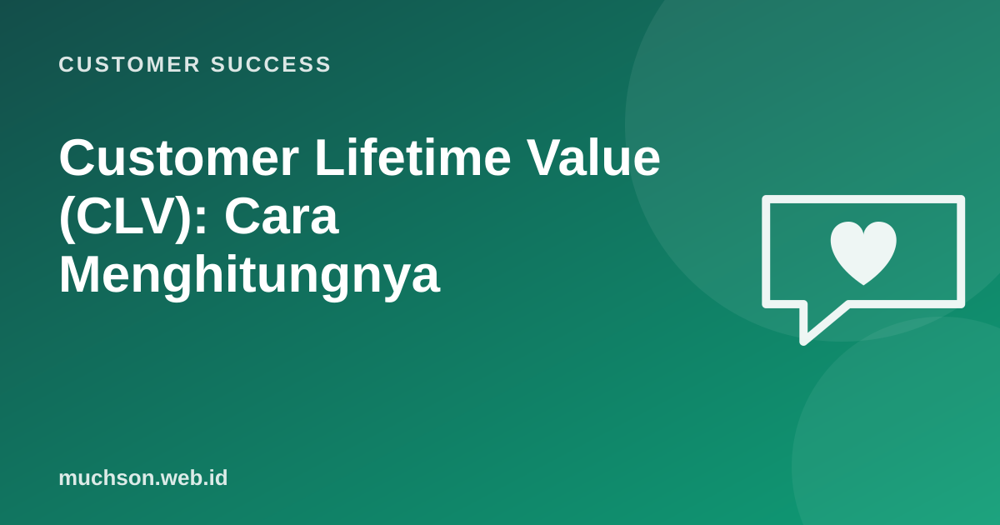

Beranda › Artikel › Customer Success
Customer SuccessCustomer Lifetime Value (CLV): Cara Menghitungnya
Berapa sebenarnya nilai satu pelanggan bagi bisnis Anda? Bukan hanya transaksi pertamanya, tetapi seluruh pembelian selama ia menjadi pelanggan. Customer lifetime value membantu menjawab pertanyaan penting: berapa yang boleh dikeluarkan untuk mendapatkan pelanggan baru, dan seberapa berharga mempertahankan yang lama.

Rumus sederhana untuk bisnis langganan
CLV ≈ (pendapatan rata-rata per pelanggan per bulan × margin kotor)
÷ churn bulanan
Contoh: Rp300.000 × 70% ÷ 4% = Rp5.250.000Coba turunkan churn dari 4% ke 3% di kalkulator: CLV naik sekitar sepertiga tanpa mengubah harga sedikit pun. Itulah alasan retensi begitu penting.
Untuk toko dan bisnis non-langganan
CLV ≈ nilai rata-rata per transaksi
× jumlah transaksi per tahun
× lama rata-rata menjadi pelanggan (tahun)
× margin kotor
Contoh optik: Rp800.000 × 1 kali/tahun × 4 tahun × 50% = Rp1.600.000Untuk toko kacamata, pelanggan yang puas biasanya kembali saat resepnya berubah atau ingin frame kedua, dan merekomendasikan keluarganya. Nilai rekomendasi ini tidak masuk rumus sederhana, tetapi sangat nyata.
Cara menaikkan CLV
CLV adalah perkiraan, bukan kepastian. Rumus sederhana mengasumsikan churn konstan. Untuk keputusan besar, hitung CLV per segmen dan per kohort.
Tanya jawab
Apakah memakai pendapatan atau laba?
Bagaimana bila bisnis masih baru dan belum ada data churn?
Apa bedanya CLV dan LTV?
Sumber dan bacaan lanjut
- Gupta et al. (2006): Modeling Customer Lifetime Value, Journal of Service Research
- Churn rate (artikel terkait)
- Retensi pelanggan untuk UMKM (artikel terkait)